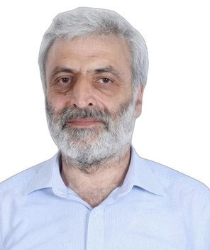

Profil
Qərib Mürşüdov 2011-ci ildən Kembricdəki MRC Molekulyar Biologiya Laboratoriyasında qrup rəhbəridir və Bakıda Molekulyar Biologiya və Biotexnologiyalar İnstitutunda laboratoriya müdiridir. 1989–1992-ci illərdə Moskvanın Kristalloqrafiya İnstitutunda PhD dərəcəsi alıb. Dissertasiya Micrococcus lysodeikticus katalazasının 1,5 Å dəqiqliklə üçölçülü quruluşudur. 1980–1985-ci illərdə Bakı Dövlət Universitetində tətbiqi riyaziyyat üzrə birinci dərəcə alıb. Əvvəl York Universitetində Wellcome Trust-ın baş elmi işçisi və universitet elmi işçisi olub.
İş təcrübəsi
MRC Molekulyar Biologiya Laboratoriyası, Kembric, Birləşmiş Krallıq
2011–hazırdaQrup rəhbəri
Molekulyar Biologiya və Biotexnologiyalar İnstitutu, Elm və Təhsil Nazirliyi, Bakı, Azərbaycan
2011–hazırdaLaboratoriya müdiri
York Struktur Biologiya Laboratoriyası, York Universiteti, Birləşmiş Krallıq
2008–2011Wellcome Trust universitet elmi işçisi
Kimya departamenti, York Universiteti
2001–2008Wellcome Trust baş elmi işçisi
Kimya departamenti, York Universiteti
1996–2001BBSRC postdoktorantı
Kimya departamenti, York Universiteti
1993–1996Avropa Komissiyasının postdoktorantı
Kristalloqrafiya İnstitutu, Moskva, Rusiya
1987–1993Tədqiqatçı, PhD təhsili daxil olmaqla
Fizika İnstitutu, Bakı, Azərbaycan
1985–1987Tədqiqatçı
Təhsil
PhD
1989–1992Kristalloqrafiya və kristallofizika nəzəriyyəsi. Dissertasiya: Micrococcus lysodeikticus katalazasının 1,5 Å dəqiqliklə üçölçülü quruluşu
Kristalloqrafiya İnstitutu, Moskva, Rusiya
Birinci dərəcə
1980–1985Tətbiqi riyaziyyat. Layihə: Stekloff tipli tənliklərin spektral təhlili
Bakı Dövlət Universiteti, Bakı, Azərbaycan
Tədris
- 2001–2011 — Qabaqcıl statistika — Riyaziyyat departamenti, York Universiteti
- 2011 — Hesablama kimyası — Kimya departamenti, York Universiteti
- 2013–2023 — Hesablama struktur biologiyası — Molekulyar Biologiya və Biotexnologiyalar İnstitutu, AMEA, Azərbaycan
- 2019–2023 — Biologiyanın müasir problemləri, ildə üç və ya dörd mühazirə — Molekulyar Biologiya və Biotexnologiyalar İnstitutu, AMEA
- 2022–2023 — Bioloqlar üçün statistika — Molekulyar Biologiya və Biotexnologiyalar İnstitutu, AMEA
Nəşrlər
Kitab fəsilləri
1. Low Resolution Refinement of Atomic Models Against Crystallographic Data. Nicholls RA, Kovalevskiy O, Murshudov GN, in Method in Molecular Biology, v1607, in Protein Crystallography. Wlodawer, Dauter and Jaskolskiy eds, pp565-593 (2017)
2. Low resolution refinement of atomic models against crystallographic data. Nicholls R.A., Kovalevskiy O. and Murshudov G.N. Methods in Molecular Biology: Protein Crystyallography. 565-593 (2017)
3. Nicholls RA, Long F and Murshudov GN "Recent Advances in Low Resolution Refinement Tools in REFMAC5" in "Advancing Methods for Biomolecular Crystallography" 231-258 (2013)
4. Vagin AA., Murshudov GN. Organisation of prior chemical knowledge for macromolecular structure refinement. Newsletter of Commission of Crystallographic computing, 2004;4:59-73
5. Dauter Z, Murshudov GN, Wilson KS. Refinement at atomic resolution. In Rossmann MG, Arnold E editors. International Table for Crystallographers vol F. Crystallography of biological macromolecules. 2001:
6. Vagin AA, Murshudov GN, Strokopytov BV. The BLANC: program suite for protein crystallography. CCP4 newsletter, 1997 January:33;25-30
7. Murshudov GN, Dodson EJ. Simplified error estimation a la Cruickshank in macromolecular crystallography. CCP4 Newsletters, 1997 January:33:31-39
8. Bravo J, Fita I, Gouet P, Jouve HM, Melik-Adamyan WR, Murshudov GN. Structure of catalases. In: Scandalios JG editor. Oxidative stress and the molecular biology of Antioxidant Defenses. Cold Spring Harbor Laboratory Press 1997
9. Murshudov GN, Davies GJ, Isupov M, Krzywda S, Dodson EJ. The effect of overall anisotropic scaling in macromolecular refinement. CCP4 Newsletters 1998;35:37-42
10. Murshudov GN, Vagin AA, Dodson EJ. Application of Maximum likelihood methods for macromolecular refinement. In Dodson E, Moore M, Ralph A, Bailey S editors. Proceedings of CCP4 study weekend on Macromolecular refinement, 1996;93-104 List of software
11. Warsmanage R, Murshudov GN “EMDA – a program for maximum likelihood fitting map manupilation, map to map, model to map fitting designed for cryoEM modelling”, 2019-present
12. Long F, Murshudov GN. "AceDRG - a program for designing small compound description", 2015
13. Long F, Murshudov GN "libg - a program for extraction invariant features of RNA/DNA", 2014-present
14. Vagin AA, Lebedev A and Murshudov GN. “REFMAC a maximum likelihood program for Macromolecular crystal structure refinement” 1997-present
15. Long F, Vagin AA, Young P and Murshudov GN “BALBES – an automatic structure solution pipileine” 2006-present
16. Vagin AA, Long F and Murshudov GN “Database of Macromolecular structures and domaisn” 2006-present
17. Vagin AA and Murshudov GN “Ligand database – organization of prior chemical knowledge for Macromolecular crystal structure solution and refinement” 2000-present
18. Young P, Long F, Vagin AA, Lebedev A and Murshudov GN. “Webserver for macromolecular crystallography”, 2007-2012
19. Young P, Lebedev A, Murshudov GN JLigand – a graphical interface for manipulation of ligands geometry, 2009-present
20. Tykac M. Murshudov GN. ProSHADE – SO3 Fourier transformation based software for classification and manipulation of three-dimensional density maps and coordinates. 2018- present
21. Yamashita, K., Murshudov GN., SERVALCAT – Bayesian statistics based software for refinement of atomic models against cryoEM maps.
22. Babai K, Long F and Murshudov GN. MetalCoordAnalysis – Prior probability distribution for metal environment learnt from COD and appied to the PDB. 2023-present
Rəylənmiş (peer-reviewed) jurnal məqalələri
1. Community recommendations on cryoEM data archiving and validation. Kleywegt GJ,… Murshudov GN, Velankar S (2024) IUCRj, v11, 140-151
2. A redox switch allows binding of Fe(II) and Fe(III) ions in the cyanobacterial iron-binding protein FutA from Prochlorococcus. (2024) Bolton R, … Murshudov GN.,. Tews I. PNAS, V121, e2308478121
3. Neutron crystallographic refinement with REFMAC5 from the CCP4 suite (2023), Catapano L., Long F., Yamashita K., Nicholls RA, Steiner R and Murshudov GN (2023), Acta Cryst D79, 1056-1070
4. GEMMI and Servalcat restrain REFMAC5. Yamashita K, Wojdyr M, Long F, Nicholls RN and Murshudov GN. (2023), Acta Cryst. D79, 368-373
5. Interdigitated immunoglobulin arrays form the hyperstable surface layer of the extremophilic bacterium Deinococcus radiodurans. von Kügelgen A, van Dorst S, Yamashita K, Sexton TL, Tocheva EI, Murshudov G, Alva V, Bharat TAM. (2023) PNAS, 120, e2215808120
6. The CCP4 suite: integrative software for macromolecular crystallography. Agirre J,…,Murshudov GN,… (2023). Acta Cryst. D79, 449-461
7. EMDA: a Python package for electron microscopy data analysis. Warshmanage, R, Yamashita, K. & Murshudov, G.N. (2022) J. Structural Biology, 214, 107826
8. Cryo-EM single particle structure refinement and map calculation using Servalcat. Yamashita, K., Palmer, C. M., Burnley, T. & Murshudov, G. N. (2021). Acta Cryst. D77, 1282-1291.
9. Bipartite binding and partial inhibition links DEPTOR and mTOR in a mutually antagonistic embrace. Heimhalt, M., Berndt, A., Wagsaff, J., Anandapadamanaban, M., Perisic, O., Maslen, S., McLauglin, S., Yu, C.W-H.,Masson, G.R., Boland, A., Yamashita, K., Murshudov, G.N., Skehel, M., Freund, S.M., Williams, R.L. eLife, 10, e68799 (2021)
10. The missing link: covalent linkages in structural models. Nicholls, R.A., Wojdyr, M., Joosten, R.P., Catapano, L., Long, F., Fischer, M., Emsley, P., Murshudov, G.N. Acta Crystallographica, D77, 727-745 (2021)
11. Modelling covalent linkages in CCP4. Nicholls, R.A., Joosten, R.P., Long, F.,Wojdyr, M., Lebedev, A., Krissinel, E., Catapano, L., Fischer, M., Emsley, P., Murshudov, G.N. Acta Crystallographica, D77, 712-726 (2021)
12. Single-particle cryo-EM at atomic resolution. Nakane T, Nakane, T., Kotecha, A., Sente, A., McMullan, G., Masiulis, S., Brown, P. M. G. E., Grigoras, I. T., Malinauskaite, L., Malinauskas, T., Miehling, J., Yu, L., Karia, D., Pechnikova, E. V., de Jong, E., Keizer, J., Bischoff, M., McCormack, J., Tiemeijer, P., Hardwick, S. W., Chirgadze, D. Y., Murshudov, G., Aricescu, A. R. and Scheres, S. H. W. Nature, 587, 152-156 (2020)
13. Local and global analysis of macromolecular Atomic Displacement Parameters. Masmaliyeva RC, Babai K. and Murshudov GN Acta Crystallographica D76, 926-937 (2020)
14. Predictive power of data-processing statistics. Vollmar M, Parkhurst JM, Jaques D, Basle A, Murshudov GN, Waterman D, Evans G. IUCrJ, 7, 342-354 (2020)
15. On the complementarity of X-ray and NMR data. Schirò, Antonio; Carlon, Azzurra; Parigi, Giacomo; Murshudov, Garib; Calderone, Vito; Ravera, Enrico; Luchinat, Claudio; Journal of Structural Biology: X (2020)
16. Supercell refinement: a cautionary tale. Lovelace J, Petricek V, Murshudov G, Borgstahl GEO. Acta Crystallographica, D75, 852-860 (2019)
17. Analysis and validation of macromolecular B values. Masmaliyeva RC and Murshudov GN. Acta Crystallographica D75, 505-518 (2019)
18. DNA topoisomerase inhibitors: trapping a DNA-cleaving machine in motion. BAx BD, Murshudov G, Maxwell A, Germe T. Journal of Molecular Biology, 431, 3427-3449 (2019)
19. Joint X-ray/NMR structure refinement of multidomain/multisubunit systems. Carlon A, Ravera E, Parigi G, Murshudov GN and Luchinat C. Journal of biomolecular NMR, 265-278 (2019)
20. Pathological macromolecular crystallographic data affected by twinning, partial-disorder and exhibiting multiple lattices for testing of data processing and refinement tools. Campeotto I, Lebedev A, Schreurs AMM, Kroon-Batenburg KMJ, Lowe E, Philips SEV, Murshudov GN and Pearson AR Scientific reports 8, 14876 (2018)
21. Current approaches for the fitting and refinement of atomic models into cryo-EM maps using CCP-EM. Nicholls AN, Tykac M, Kovalevskiy, Murshudov GN. Acta Crystallographica D74, 492-505 (2018)
22. Overview of refinement procedures within REFMAC5: utilizing data from different sources. Kovalevskiy O, Nichols AN, Long F, Carlon A, Murshudov GN. Acta Crystallographica D74, 215-227 (2018)
23. Cryo-EM structures of tau filaments from Alzheimer's disease. Fitzpatrick, AWP, Falcon B, He S, Murzin AG, Murshudov GN, Garringer HJ, Crowther RA, Ghetti BF, Goedert M, Scheres SHW. Nature, 547, 185-190 (2017)
24. AUSPEX: a graphical tool for X-ray diffraction data analysis. Thorn A, Parkhurst J, Emsley P, Nicholls RA, Volmar M, Evans G and Murshudov GN Acta Cryst. D73, 729-737 (2017)
25. Background modelling of diffraction data in the presence of ice rings. Parkhurst JM, Thorn, Vollmar V, Winter G, Waterman DG, Fuentes-Montero L, Gildea RJ, Murshudov GN and Evans G. IUCrJ, 5, 626-638 (2017)
26. ACEDRG: A stereo-chemical description generator for ligands. Long F., Nicholls R.A., Emsley P., Grazulis S., Merkys A., Vatikus A. and Murshudov G.N. Acta Cryst. D73, 112- 122 (2017)
27. Validation and extraction of stereochemical information from small molecular databases.Long F., Nicholls R.A., Emsley P., Grazulis S., Merkys A., Vatikus A. and Murshudov G.N. Acta Cryst. D73, 103-111 (2017)
28. Data mining of Fe(II) and Fe(III) bond valence parameters, and their relevance for macromolecular crystallography. Zheng, H., Langner, K.M., Shields, G.P., Hou, J., Kowiel, M., Allen, F.H., Murshudov, G. and Minor, W., Acta Cryst D53, 316-325 (2017)
29. Automated refinement of macromolecular structures at low resolution using prior information. Kovalevskij, O, Nicholls, RA and Murshudov GN, Acta Cryst, D72, 1149-1161 (2016)
30. Refinement of Atomic Structures Against cyro-EM maps. Murshudov GN. Methods in Enzymology, Crowther A ed. 579, 277-305 (2016)
31. Robust background modelling in DIALS. Parkhurst J, Winter G, Waterman DG, Fuentos- Montero L, Gildea R, Murshudov GN and Evans G. 49, J. Appl. Cryst. 1-10 (2016)
32. Outcome of the First wwPDB/CCDC/D3R Ligand Validation Workshop. Adams, P.D., Aertgeerts, K.,. Murshudov, G.N.,. Structure. 24, 502-508 (2016)
33. How to tackle protein structural data from solution and solid state: An integrated approach. Carlon A, Ravera, E., Andralojc, W., Parigi, G., Murshudov, G.N. and Luchinat, C. Progress in Nuclear Magnetic Resonance Spectroscopy. V92-93, 54-70 (2016)
34. Structures of actin-like ParM filaments show architecture of plasmid-segregating spindles. Lowe J, Bharat T, Murshudov G and Sachse C. Nature, 523, 106-110, 2015
35. MutS/MutL crystal structure reveals that the mutS sliding clamp loads MutL onto DNA. Groothuizen FS, Winkler I, Cristóvão M, Fish A, Winterwerp HHK, Reumer A, Marx A, Hermans N, Nicholls RA, Murshudov GN, Lebbink JH, Friedhoff P, Sixma TK. eLife, 4, e06744 (2015)
36. Data to knowledge; how to get meaning from your result. Berman HM, Gabani MJ, Groom CR, Johnson JE, Murshudov GN, Nicholls RA, Redy V, Schwede T, Zimmerman MD, Westbrook J, Minor W IUCRj 2, 45-58 (2015)
37. Tools for macromolecular model building and refinement into electron cryo-microscopy reconstructions. Brown A, Long F, Nicholls RA, Toots J, Emsley P and Murshudov G. Acta Cryst. D70, 136-153 (2015)
38. Structure of the yeast mitochondrial large ribosomal subunit. Amunts, A., Brown, A., Bai, X. C., Llacer, J. L., Hussain, T., Emsley, P., Long, F., Murshudov, G., Scheres, S. H. & Ramakrishnan, V. Science 343, 1485-1489 (2014)
39. Structure of the large ribosomal subunit from human mitochondria. Brown, A., Amunts, A., Bai, X. C., Sugimoto, Y., Edwards, P. C., Murshudov, G., Scheres, S. H. & Ramakrishnan, V. Science 346, 718- 722 (2014)
40. Initiation of translation by cricket paralysis virus IRES requires its translocation in the ribosome. Fernandez, I. S., Bai, X. C., Murshudov, G., Scheres, S. H. & Ramakrishnan, V. Cell 157, 823-831 (2014)
41. The PDB_REDO server for macromolecular structure model optimization. Joosten, R. P., Long, F., Murshudov, G. N. & Perrakis, A. IUCrJ. 1, 213-220 (2014)
42. Conformation-independent structural comparison of macromolecules with ProSMART, Nicholls, R. A., Fischer, M., McNicholas, S. & Murshudov, G. N. Acta Cryst. D70, 2487-2499 (2014)
43. Simultaneous use of solution NMR and X-ray data in REFMAC5 for joint refinement/detection of structural differences. Rinaldelli, M; Ravera, E; Calderone, V; Parigi, G; Murshudov, GN; Luchinat, C. Acta Cryst, D70, 958-967, (2014)
44. High-resolution noise substitution to measure overfitting and validate resolution in 3D structure determination by single particle electron cryomicroscopy. Chen S, McMullan, G, Faruqi, AR, Murshudov, GN, Short, JM, Scheres, SHW, Henderson, R. Ultramicroscopy; 134, 24-35 (2013)
45. How good are my data and what is the resolution? Evans, PR and Murshudov, GN. Acta Cryst: D69, 1204-1214 (2013)
46. Low-resolution refinement tools in REFMAC5 Nicholls RA, Long F and Murshudov GN. Acta Cryst. D68, 404-417, (2012)
47. PDB_REDO: constructive validation, more than just looking for errors. Joosten RJ, Joosten K, Murshudov GN and Perrakis A. Acta Cryst. D68; 484-496 (2012)
48. JLigand: a graphical tool for CCP4 template restraint library. Lebedev AA, Young P, Isupov M, Moroz OV, Vagin AA and Murshudov GN. Acta Cryst. D68, 431-440 (2012)
49. Structural characterization of H. pylori dethiobiotin synthetase reveals differences between family members. Porebski PJ, Klimecka M, Chruszcz M, Nicholls RA, Murzyn M, Cuff ME, Xu X, Cymborowski M, Murshudov GN, Savchenko A, Edwards A, and Wladek Minor W Febs Letters. 1093-1105 (2012)
50. Structural flexbility of the dengue virus receptor CLEC5A: implications for ligand binding and signalling. Watson, A. A., Lebedev, A. A., Hall, B. A., Fenton-May, A., Vagin, A. A., Dejnirattisai, W., Felce, J., Mongkolsapaya, J., Screaton, G. R., Murshudov, G. N. & O'Callaghan, C. A. JBC, 24208-24218 (2011)
51. Heme-catalases. Mate MJ, Murshudov G, Bravo J, Melik-Adamyan W, Lowen PC and Fit I. Encyclopedia of Organic and Inorganic Chemistry. R. A. Scott (Ed.) 1-18
52. Structural flexbility of the dengue virus receptor CLEC5A: implications for ligand binding and signalling. Watson, A. A., Lebedev, A. A., Hall, B. A., Fenton-May, A., Vagin, A. A., Dejnirattisai, W., Felce, J., Mongkolsapaya, J., Screaton, G. R., Murshudov, G. N. & O'Callaghan, C. A. Annual Congress of the British-Society-for-Immunology, 101-101 (2011)
53. Evaluating the solution from MrBUMP and BALBES. Keegan R, Long F, Fazio F, Winn M and Murshudov G Acta Cryst. D67, 313-323 (2011)
54. Some statistical properties of the crystallographic reliability index – Rfactor. Murshudov GN. Applied and Computational Mathematics. An International Journal. 10 (2011)
55. REFMAC5 for the Refinement of Macromolecular Crystal Structures. Murshudov GN, Skubak P, Lebedev AA, Pannu NS, Steiner RA, Nicholls RA, Winn MD, Long F, Vagin AA Acta Cryst:, D67, 355-367 (2011)
56. Overview of CCP4 suite and current developments. Winn MD, Ballard CC, Cowtan KD, Dodson EJ, Emsley P, Evans PR, Keegan RN, Krissinel EB, Leslie AGW, McCoy A, McNicholas SJ, Murshudov GN, Pannu NS, EPotterton EA, Powell HR, Read RJ, Vagin A and Wilson KS. Acta Cryst: D67, 235-242 (2011)
57. A redesigned database of three-dimensional protein structures for Reuse in Macromolecular Crystallpgraphy. Vagin, AA, Long F and Murshudov GN. Proceedings of the National Academy of Sciences of Azerbaijan Republic (Biological Sciences) 168-176 (2010)
58. A multivariate likelihood SIRAS function for phasing and model refinement. Skubak, P, Murshudov GN and Pannu NP Acta Cryst:2D65, 1051-1061 (2009)
59. Conditional Restraints": Restraining the Free Atoms in ARP/wARP. Mooij WTM, Cohen SX, Joosten K, Murshudov GN and Perrakis A. Structure 17, 183-189 (2009)
60. BALBES: a molecular replacement pipeline. Long F, Vagin A, Young P, Murshudov GN. Acta Cryst D64, 125-134 (2008)
61. Model preparation in MOLREP and examples of model improvement using X-ray data. Lebedev A, Vagin A, Murshudov GN. Acta Cryst. D64, 33-39 (2008)
62. ARP/wARP and molecular replacement: the next generation. Cohen SX, Jelloul MB, Long F, Vagin A, Knipscheer P, Lebbink J, Sixma TK, Lamzin VS, Murshudov GN and Perrakis A Acta Cryst. D64, 49-60 (2008)
63. Surprises and pitfalls arising from (pseudo)symmetry. Zwart PH, Gross-Kunstlve RW, Lebedev AA, Murshudov GN and Adam PD. Acta Cryst. D64, 99-107 (2008)
64. The structures and electronic configuration of compound I intermediates of Helicobacter pylori and Penicillium vitale catalases determined by X-Ray crystallography and QM/MM DFT calculations. Alfonso-Prieto M, Borovik A, Carpena X, Murshudov G, Melik-Adamyan W, Fita I, Rovira C and Loewen PC. JACS, 129(14), 4193-4205 (2007)
65. Intensity statistics in twinned crystals with examples from the PDB. Lebedev, AA, Vagin AA and Murshidov, GN Acta Cryst. D62, 83-95 (2006)
66. Heme-catalases. Mate MJ, Murshudov G, Bravo J, Melik-Adamyan W, Lowen PC and Fit I. Encyclopedia of Organic and Inorganic Chemistry. eds A. Messerschmidt, R. Huber, T. Poulas, K. Wieghardt, M. Cygler and W. Bode
67. SPINE workshop on automated X-ray analysis: a progress report. Bahar M, Ballard C, Cohen SX, Cowtan KD, Dodson EJ, Emsley P, Esnouf RM, Keegan R, Lamzin V, Langer G, Levdikov V, Long F, Meier C, Muller A, Murshudov GN, Perrakis A, Siebold C, Stein N, Turkenburg MGW, Vagin AA, Winn M, Winter G, Wilson KS. Acta Cryst. D62, 1170-1183 (2006)
68. Variable role of ions in two drug interaction complexes of DNA. Vallis, N., Steiner, RA, Wright, G, Murshudov, GN, Subirana JA. J.Biol.Inorg.Chem 10, 476-482 (2005)
69. Structures of Plasmodium falciparum purine nucleoside phosphorylase complexed with sulfate and its natural substrate ionosine. Schnick, C., Robien, MA, Dodson, EJ, Murshudov, GN, Anderson, L, Luft, JR, Mehlin, C., Hol, WGJ, Branniganm JA and Wilkinson AJ. Acta Cryst., D61, 1245-1254 (2005)
70. REFMAC5 dictionary: organisation of prior chemical knowledge and guidelines for its use. Vagin, AA, Steiner, RS, Lebedev, AA, Potterton, L, McNicholas, S, Long, F and Murshudov, GN. Acta Cryst. D60, 2184-2195 (2004)
71. Direct incorporation of experimental phase information in model refinement. Skubak P, Murshudov GN, Pannu NS. Acta Cryst. D60, 2196-2201 (2004)
72. Developments in the CCP4 molecular-graphics project. Potterton L, McNicholas S, Krissinel E, Gruber J, Cowtan K, Emsley P, Murshudov GN, Cohen S, Perrakis A, Noble M Acta Cryst., D60, 2288-2294 (2004)
73. Crystallization and preliminary X-ray diffraction studies of a fungal hydrolase from Ophiostoma novo-ulmi. Isupov MN, Brindley AA, Hollingsworth EJ, Murshudov GN, Vagin AA, Littlechild JA. Acta Cryst. D60, 1879-1882 (2004)
74. DNA variability in five crystal structures of d(CGCAATTGCG). Valls N, Wright G, Steiner RA, Murshudov GN, Subirana JA. Acta Cryst., D60, 680-685 (2004)
75. Macromolecular TLS refinement in REFMAC at moderate resolutions. Winn MD, Murshudov GN, Papiz MZ. Methods in Enzymology, 374, 300-321 (2003)
76. Fisher’s information matrix in maximum likelihood molecular refinement. Steiner R, Lebedev, A, Murshudov GN. Acta Cryst. D59, 2114-2124 (2003)
77. Face-to-face and edge-to-edge pi-pi interaction in a synthetic DNA hairpin with stilbenediether linker. Egli, M, Tereshko, V, Murshudov, GN, Sanishvili, R, Liu, XY, Lewis FD. JACS, 125, 10842-10849 (2003)
78. The structure of NADH in the enzyme of dTDP-D-glucose dehydratase (RmIB). Beis, K, Allard, STM, Hegeman, AD, Murshudov, G, Philip, D, Naismith, JH. JACS, 125, 11872-11878 (2003)
79. The structures of Micrococcus lysodeikticus catalase, its ferryl intermediate (compound II) and NADPH complex. Murshudov GN, Grebenko AI, Brannigan JA, Antson AA, Barynin VV, Dodson GG, Dauter Z, Wilson KS, Melik-Adamyan WR. Acta Cryst. D58, 1972-1982 (2002)
80. Substrate distortion by a beta-mannanase: Snapshot of the Michelis and covalent intermediate complexes suggest a B2,5 conformation for the transition state. Ducros VMA, Zeche DL, Murshudov GN, Gilbert HJ, Szabo L, Stoll D, Withers SG, Davies GJ. Angew Chem Int ed. 41(15), 2824 (2002)
81. Structural origin of the functional divergence of human insulin like growth factor-I and insulin. Biochemistry. Brzozowski AM, Dodson EJ, Dodsnon GG, Murshudov GN, Verma C, Turkenburg JP, de Bree FM, Dauter Z. 41(30), 9389-9397 (2002)
82. NMR trial model: experiences with colicin immunity protein IM7 and the p85 alpha terminal SH2-peptide complex. Pauptit RA, Dennis CA, Derbyshire DJ, Breeze AL, Weston SA, Roswell S, Murshudov GN. Acta Cryst. D57, 1397-1404 (2001)
83. Structure of Bacillus cell fate determinant SpoIIAA in phosphorilated and unphsphorilated forms. Seavers PR, Lewis RJ, Branningan JA, Verschuren KHG, Murshudov GN, Wilkinson AJ. Structure 9(7), 605-614 (2001)
84. X-ray structure of bovine pancreatic phospholipase A(2) at atomic resolution. Steiner RA, Rozeboom HJ, de Vries A, Kalj KH, Murshudov GN, Wilson KS, Dijkstra BW. Acta Cryst D57, 516-526 (2001)
85. Crystal structure of GerE, the ultimate transcriptional regulator of spore formation in Bacillus. Ducros VMA, Lewis RJ, Verma CS, Dodson EJ, Leonard G, Turkenburg JP, Murshudov GN, Wilkinson AJ, Brannigan JA. J.Mol.Biol. 306(4), 759-771 (2001)
86. The three-dimensional structure of human S100 A12. Moroz OV, Antson AA, Murshudov GN, Maiyland NJ, Dodson GG, Wilson KS, Skibshoj I, Lukindina EM, Bronstein IB., Acta Cryst. D57, 20-29 (2001)
87. Use of TLS parameter to model anisotropic displacement in macromolecular refinement. Winn MD, Isupov M, Murshudov GN. Acta Cryst. D57, 122-133 (2001)
88. Structure of Slow processing Precursor Penicillin Acylase from Escherichia coli reveals the linker peptide blocking active site cleft. Hewitt L, Kasche V, Lummer K, Lewis RJ, Murshudov GN, Verma CS, Dodson GG, Wilson KS. J Mol Biol 302, 887-898 (2000)
89. Crystal structure of dodecameric vanadium-dependent bromoperoxidase from the red algae Carollina officinalis. Isupov MN, Dalby AR, Brindley AA, Izumi Y, Tanabe T, Murshudov GN, Littlechild JA. J Mol Biol. 299, 1035-1049 (2000)
90. The three dimensional structure of a Trichoderma reesi beta-mannanase from glycoside hydrolase famili 5. Sabini E, Schubert H, Murshudov GN, Wilson KS, Siika-Aho S, Penttila M. Acta Cryst. D56, 3-13 (2000)
91. The structure of the exa-beta-(1,3)-glucanase from Candida albicans in native and bound forms: Relationship between a pocket and groove in family 5 glycosil hydrolases. Cutfield SM, Davies GJ, Murshudov GN, Anderson BF, Moody PCE, Sullivan PA, Cutfield JF. J Mol Biol. 294, 771-783 (1999)
92. Binding of non-catlytic ATP to human hexokinase I highlights the structural components for enzyme-membrane association control. Rosano C, Sabini E, Rizzi M, Deriu D, Murshudov GN, Blanchi M, Serafini G, Mangani M, Bolognesu M. Sturcture 7, 1427-1437 (1999)
93. Efficient anisotropic refinement of macromolecular structures using FFT. Murshudov GN, Vagin AA, Lebedev A, Wilson KS, Dodson EJ. Acta Cryst. D55, 247-255 (1999)
94. Solution of the structure of the cofactor binding fragment of CysB: A struggle against non- isomorphism. Verschuren KHG, Tyrrel R, Murshudov GN, Dodson EJ, Wilkinson AJ. Acta Cryst. D55, 369-378 (1999)
95. Incorporation of prior phase information strengthens Maximum likelihood structure refinement. Pannu N, Murshudov GN, Dodson EJ, Read R. Acta Cryst. D54, 1285-1294 (1999)
96. Validation tools: can they indicate the information content of macromolecular crystal structure? Dodson EJ, Davies GJ, Lamzin VS, Murshudov GN, Wilson KS. Structure. 6, 685-690 (1999)
97. Stbilizing bound O-2 in myoglobin by valine(58) (E11_ to asparagin substitution. Krzywda S, Murshudov GN, Brzozowski AM, Jaskolski M, Scott EE, Klizas SA, Gibson QH, Olson JS, Wilkinson AJ. Biochemsitry 37, 15896-15907 (1998)
98. BLANC: the program suite for protein crystallography. Vagin AA, Murshudov GN, Strokopytov BV. J. Appl. Cryst. 31, 98-102 (1998)
99. An unexpected symmetry in the LysR-type transcriptional activator, CysB. Verschuren KHG, Tyrrel R, Dodson EJ, Murshudov GN, Wilkinson AJ. General physiology and biophysics. 17, 43-46 (1998)
100. Who checks the checkers? Four validation tools applied to eight atomic resolution structures. Wilson KS, Butterworth, S, Dauter Z, Lamzin VS, Walsh M, Wodak S, Pontius J, Richelle J, Vaguine A, Sander C, Hooft RWW, Vriend G, Thornton JM, Laskowski RM, MacArthur NW, Dodson EJ, Murshudov GN, Oldfield TJ, Kaptein R, Rullman JAC. J Mol Biol. 276, 417-436 (1998)
101. The structure of the cofactor binding fragment of the LysR family member, CysB; a familiar fold with surprising subunit arrangement. Tyrrel R, Verschuren KHG, Dodson EJ, Murshudov GN, Addy C, Wilkinson AJ. Structure 5, 1017-1032 (1997)
102. Refinement of Macromolecular structures by Maximum likelihood method. Murshudov GN, Vagin AA, Dodson EJ. Acta Cryst. D53:240-255 (1997)
103. Structure of Heme D of Penicillum vitale and Escherichia coli Catalases. Murshudov GN, Grebenko AI, Barynin V, Dauter Z, Wilson KS, Vainshtein BK, Melik-Adamyan W, Bravo J, Ferran JM, Ferrer JC. J.Bio.Chem. 271, 8863-8868 (1996)
104. The crystal structure of the oligopeptide-binding protein OPPA complexed with tripeptide and tetrapeptide ligands. Tame JRH, Dodson EJ, Murshudov G, Higgins CF, Wilkinson AJ. Structure. 3, 1395-1406 (1995)
105. Crystal structure of an extracellular fragment of the rat CD4 receptor-containing domain-3 and domain-4. Lang G, Lewis SJ, Murshudov GN, Dodson GG, Moody PCE, Turkenburg JP, Barclay AN, Brady RL. Structure 6, 469-481 (1994)
106. The structural basis of sequence-independent peptide binding of OPPA protein. Tame JRH, Murshudov GN, Dodson EJ, Neil TK, Dodson GG, Higgins CF, Wilkinson AJ. Science 264, 1578-1681 (1994)
107. Comparison of the quality if catalase crystals prepared under microgravitation and on the earth. Grebenko AI, Barynin VV, Murshudov GN, Melik-Adamyan VR. Kristallographia 38(6), 244- 248 (1993)
108. 3-dimensional structure of catalase from Micrococcuys lysodeikticus at 1.5A resolution. Murshudov GN, Melik-Adamyan WR, Grebenko AI, Barynin VV, Vagin AA, Vainshtein BK, Dauter Z, Wilson KS. FEBS letters 312,1 27-131 (1992)
109. The polypeptide-chain fold in tyrosine phenol-lyase, a pyrodoxal-5’-phosphate dependent enzyme. Antson AA, Strokpytov BV, Murshudov GN, Isupov MN, Harutunyan EH, Demidkina TV, Vassylyev DG, Dauter Z, Terry H, Wilson KS. FEBS letters 302, 256-260 (1992)
110. Spatial structure of tyrosine phenolliase at a resolution 4.5-Angstrom.Antson AA, Strokopytov BV, Murshudov GN, Demidkina TV, Fogelman NK, Paskhina GG, Henning M, Nekrasov YV, Popov AN, Rubinski SV, Harutunyan EG Kristallografia 37, 82-89 (1992)
111. Space structure of Micrococcus lysodeikticus catalase at a resolution 3.0A. Isupov EF, Grebenko AI, Barynin VV. Murshudov GN, Vagin AA, Melik-Adamyan VR, Vainshtein BK. Kristallografia 34, 1451-1456 (1989)
112. The 3-A –resolution X-ray study of Micrococcus lysodeikticus bacterium catalase. Melik- Adamyan VR, Grebenko AI, Barynin VV, Isupov EF, Vagin AA, Murshudov FN, Rubinski SV, Vainshtein BK. Doklady akademii Nauk SSSR. 306, 620-623 (1989)